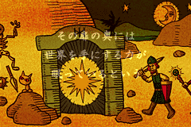

Monster Gate (Japan) (Rev 1)
SRAM 256K
Cartridge Identity
- Game Code
ANFJ(FamilyANF)- Header Title
MONSTERGATE1- Maker / Revision
A4/ rev1- ROM Size
- 8.0 MiB (8,388,608 B)
- Save Media
SRAM 256K- SHA-256
dbb092d781c69da1c733560c81a01e4d68b5d067c4f42e0a263c00faafbcac29- Engine / SDK Group
comm-052(3 families)
Screenshots

Observed Battery Save Layout
- Fill Byte & Active Size
0xFFfill · 12–12 / 32,768 B active (entropy 1.58 bits/B)- Active Offset Ranges
0x266C–0x2677(1 total)- ASCII Magic / Headers
- None detected
- Observed Variable Regions
- 0 bytes across 0 spans: None
- Candidate Checksum/Counter Spans
- None
Hardware MMIO Subsystems
ppu_display0x8000e88,0x801b904save_bus_sram_flash0x8018c80
Regional Variants & Revisions (Family ANF)
- Monster Gate (Japan) (
ANFJ, 8 MiB)